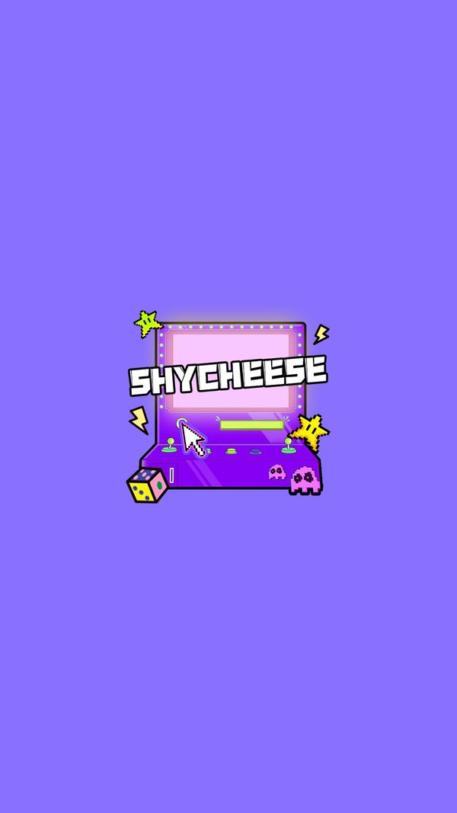

Tích hợp SDK nhà phát hành
SDKManager là lớp lớn nhất của game với 174 method, đóng vai trò cầu nối duy nhất giữa phần Unity và SDK ZMYSDK phía Java.
Mô tả
- SDKManager là lớp lớn nhất của game với 174 method, đóng vai trò cầu nối duy nhất giữa phần Unity và SDK ZMYSDK phía Java.
- Nó gánh bốn nhóm việc: đọc 17 tham số cấu hình từ server, điều khiển quảng cáo, xử lý thanh toán, và cung cấp các tiện ích nền tảng như giờ server, id thiết bị, ngôn ngữ hệ thống, hộp thoại GDPR.
- Assembly ZMYSDK có 265 kiểu và 9.073 method, nhiều hơn cả Assembly-CSharp với 3.917 method, cho thấy phần lớn khối lượng code của sản phẩm nằm ở tầng nhà phát hành chứ không phải ở game.
- Khởi tạo SDK: Game có đủ cấu hình để dựng giao diện
- Đọc một tham số cấu hình: Property trả về giá trị server hoặc mặc định client
- Lấy giờ server: Trả về epoch mili giây
- Lấy id thiết bị: Trả về UUID kiểu ece1d3cb-436a-36b4-9068-5218c044fcaa
Lưu ý
Ảnh chụp màn hình (1)
Chụp trực tiếp từ game đang chạy: 2026-10-06 · LDPlayer 9 · Android 9 · 1080×1920 · máy ảo PHM110 · v1.4111 (cài từ Google Play ngày 12/09/2026) · tài khoản test JadeGill, đang ở level 4. Bấm ảnh để phóng to, dùng phím ← → để chuyển ảnh.


Mở khóa & điểm vào
Hạ tầng, khởi tạo trong Boot qua SDKManager.Init dạng coroutine.
Điểm vào:
- Boot gọi SDKManager.Init lúc khởi động
Cách hoạt động
- SDKManager.Init là IEnumerator nên khởi tạo bất đồng bộ.
- Trong quá trình đó, SDK gọi onEnterGame và u3DGameStart, nạp 17 tham số cấu hình bằng getOnlineConfigParams với cặp tên và giá trị mặc định, lấy giá 13 sản phẩm bằng loadProductInfoStatic, kéo bản lưu bằng pullCloudArchive, và bắt đầu vòng lặp dò đơn hàng lỗi.
- 39 property của SDKManager là lớp bọc đọc các giá trị đã phân tích từ 17 chuỗi tham số.
- Toàn bộ lời gọi JNI đều ghi log kèm giá trị trả về theo mẫu chữ Hán, nên đọc được đầy đủ mà không cần công cụ chặn mạng.
Luồng chi tiết theo code
SDKManager.Init là IEnumerator nên khởi tạo bất đồng bộ. Trong quá trình đó, SDK gọi onEnterGame và u3DGameStart, nạp 17 tham số cấu hình bằng getOnlineConfigParams với cặp tên và giá trị mặc định, lấy giá 13 sản phẩm bằng loadProductInfoStatic, kéo bản lưu bằng pullCloudArchive, và bắt đầu vòng lặp dò đơn hàng lỗi. 39 property của SDKManager là lớp bọc đọc các giá trị đã phân tích từ 17 chuỗi tham số. Toàn bộ lời gọi JNI đều ghi log kèm giá trị trả về theo mẫu chữ Hán, nên đọc được đầy đủ mà không cần công cụ chặn mạng.
Số liệu chính
| Chỉ số | Giá trị | Nguồn |
|---|---|---|
| Số property cấu hình | 39 property đọc từ 17 khoá online | class SDKManager |
| Phiên bản SDK | com.zmy.zmysdk_core 2.26.20 | Resources/zmy_package_info.txt |
| GetDeviceId | ece1d3cb-436a-36b4-9068-5218c044fcaa | logcat |
Use case (4)
Bấm vào từng use case để mở. Mở/đóng tất cả
UC-01 Khởi tạo SDK
Các bước- SDKManager.Init chạy dạng coroutine
- onEnterGame với gameName
- u3DGameStart
- Nạp 17 tham số cấu hình
- loadProductInfoStatic với 13 mã sản phẩm
- pullCloudArchive
| Actor | System |
|---|---|
| Trigger | Boot chạy |
| Điều kiện | Không có |
| Kết quả | Game có đủ cấu hình để dựng giao diện |
| Evidence | SDKManager.Init; logcat onEnterGame, u3DGameStart |
UC-02 Đọc một tham số cấu hình
Các bước- Gọi getOnlineConfigParams với tên khoá và giá trị mặc định
- Tách chuỗi bằng dấu gạch dưới
- Gán vào các property
| Actor | System |
|---|---|
| Trigger | Cần một giá trị cấu hình |
| Điều kiện | SDK đã khởi tạo |
| Kết quả | Property trả về giá trị server hoặc mặc định client |
| Quy tắc / số liệu | Mã ký tự tách là 0x5f tức dấu gạch dưới, thấy rõ trong pseudo-C của SDKManager |
| Evidence | PseudoC/Assembly-CSharp/SDKManager.c dùng System_String__Split(pSVar,0x5f,...) |
UC-03 Lấy giờ server
Các bước- GetServerTimeByServerTimeZoneStatic hoặc GetServerTimeStatic
| Actor | System |
|---|---|
| Trigger | Cần mốc thời gian |
| Điều kiện | SDK đã khởi tạo |
| Kết quả | Trả về epoch mili giây |
| Quy tắc / số liệu | Đo thực tế: bản theo múi giờ server trả 1789253476098 còn bản thường trả 1789228276109, chênh nhau đúng 7 giờ |
| Evidence | logcat getServerTimeByServerTimeZoneStatic và getServerTimeStatic |
UC-04 Lấy id thiết bị
Các bước- GetDeviceId
| Actor | System |
|---|---|
| Trigger | Định danh máy |
| Điều kiện | Không có |
| Kết quả | Trả về UUID kiểu ece1d3cb-436a-36b4-9068-5218c044fcaa |
| Quy tắc / số liệu | Khác với unity.cloud_userid dùng làm playerId khi nộp điểm |
| Evidence | logcat getDeviceId |
Cấu hình (5)
Gộp mọi nguồn: const trong code, JSON mặc định trong Resources, bảng static, storage key, AB test, cờ server.
| Nguồn | Key | Kiểu | Giá trị | Ý nghĩa | Nơi định nghĩa |
|---|---|---|---|---|---|
| code const | Số property cấu hình | int | 39 property đọc từ 17 khoá online | Bề mặt cấu hình server của game | class SDKManager |
| asset | Phiên bản SDK | string | com.zmy.zmysdk_core 2.26.20 | Phiên bản lõi SDK | Resources/zmy_package_info.txt |
| server info | GetDeviceId | string | ece1d3cb-436a-36b4-9068-5218c044fcaa | Định danh thiết bị do SDK cấp | logcat |
| runtime LDPlayer 06/10/2026 | Activity chính | observed | com.common.common.act.v2.BaseAgentAct | Lớp Java của SDK bọc UnityPlayer | dumpsys window |
| runtime LDPlayer 06/10/2026 | PairIP | observed | com.pairip.application.Application + LicenseActivity | Bảo vệ chống cài lậu của Google Play | logcat |
Tham số server (live)
Tham số online của SDK ZMYSDK (SDKManager.getOnlineConfigParams). Giá trị live đọc từ logcat ngày 12/09/2026; ô tô vàng là chỗ server ghi đè mặc định của client. Bảng đủ 17 khoá ở phụ lục sự kiện và facts/runtime/server-config.md.
| Khoá | Mặc định client | Live (server) | Property C# | Ý nghĩa |
|---|---|---|---|---|
insert_test | 0_2_5_1_0 | 1_2_8_1_1 | (không ánh xạ trực tiếp) | Nhánh thử nghiệm quảng cáo xen kẽ |
level_test | 0 | 5 | LevelTest | Nhánh A/B của bảng level; máy đang chạy bộ LevelConfig2 (màn 4 = BubbleConfig_4_2) |
backhome | 0_0_7_0 | 1_1_6_0 | IsBackHome, BackHomeLevel, 2 trường chưa rõ | Luồng quay về Home; quan sát: về Home sau khi thua thì panel Khu trưng bày tự bật |
Số liệu đo trên máy
Đo trên máy
| Hạng mục | Giá trị | Ghi chú |
|---|---|---|
| Activity khởi động | com.common.common.act.v2.BaseAgentAct | dumpsys window |
| Bảo vệ cài đặt | PairIP (com.pairip.application.Application, LicenseActivity) | cài ngoài Play thì mở trang paywall của Play |
Backend / server
| Command | Chiều | Mục đích |
|---|---|---|
getOnlineConfigParams(key, default) | client sang SDK | Đọc cấu hình server |
onEnterGame / u3DGameStart | client sang SDK | Báo phiên chơi bắt đầu |
GetServerTimeStatic / GetServerTimeByServerTimeZoneStatic | client sang SDK | Giờ server |
GetDeviceId | client sang SDK | Định danh thiết bị |
Chưa đọc được / ghi chú
- Nội dung AdzConfig.json mã hoá nên không đọc được cấu hình mạng quảng cáo
- Máy chủ kích hoạt njojhbnf.flagrat.com cổng 8525 chưa quan sát được request
- Ba property IsFormSliderEnter, LevelTestEx và IsShowExhibition chưa thấy khoá online tương ứng trong lần bắt log
Tính năng liên quan
Quảng cáo Cửa hàng và mua trong ứng dụng Lưu trữ đám mây Thống kê và báo cáo Sự kiện đua có người chơi ảo
Nguồn đã đọc
- features/SDKManager.md
- PseudoC/Assembly-CSharp/SDKManager.c
- facts/runtime/logcat_boot.txt
- facts/runtime/server-config.md
- feature_extras.json
- screenshots/
- facts/runtime/decoded/playerprefs_2026-10-06.json